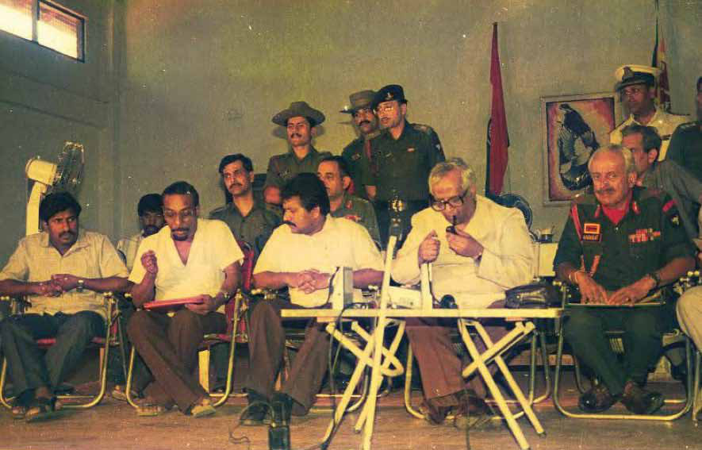
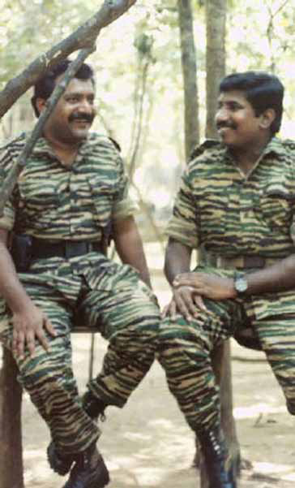
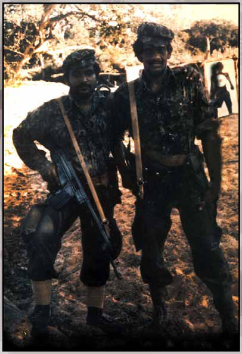
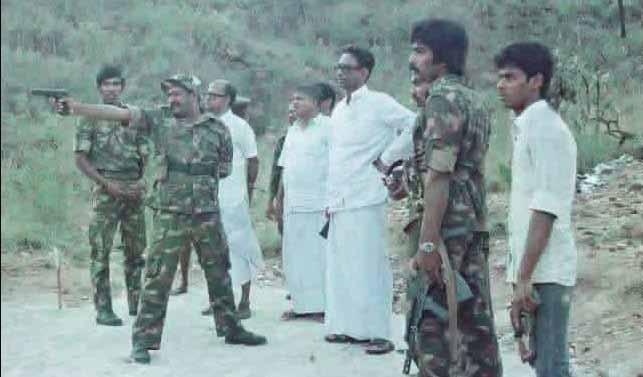
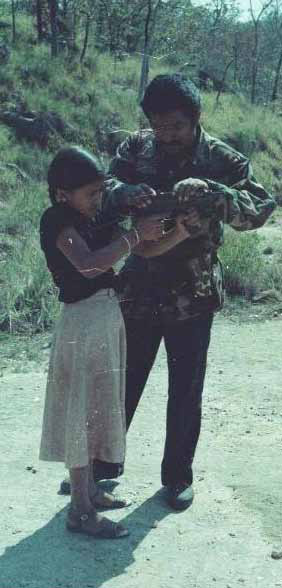
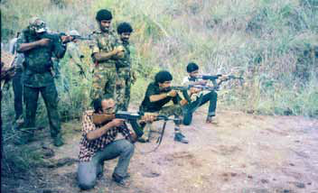
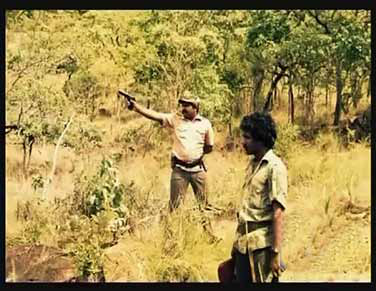
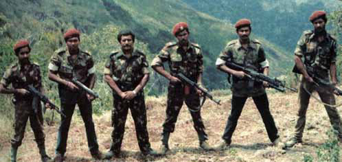

Mahathaya's Saga:
Mahathaya's Saga:
Jaffna Monitor
hellojaffnamonitor@gmail.com
8
Mahathaya's Saga:
cover story
Power, Paranoia, and
Politics in the LTTE
BY:
Kaniyan Pungundran
fzpad; G+q;Fd;wd;
Mahathaya and Prabhakaran:
A Bond Beyond the Battlefield
Mahathaya (Gopalaswamy Mahendraraja), Once a prominent figure
within the LTTE and seen as the deputy leader and public face of
the organization, faced a dramatic downfall when he was arrested in
August 1993 by the LTTE itself. He was accused of colluding with
From left: LTTE Deputy Leader Mahathaya, Political Strategist Anton Balasingham, Leader Prabhakaran, pipe-smoking Indian High
Commissioner Jyotindra Nath Dixit aka JN Dixit, and Major General Harkirat Singh at Palaly Military Base.

Jaffna Monitor hellojaffnamonitor@gmail.com 9 India's Research and Analysis Wing (RAW) in a plot to assassinate Prabhakaran and other key LTTE leaders. After enduring 16 months of captivity, Mahathaya was executed on December 28, 1994. This year marks the 29th anniversary of his execution. The arrest of Mahathaya, coupled with the allegations leveled against him, sparked widespread speculation and disbelief among observers and LTTE supporters alike, particularly considering his previously close relationship with Prabhakaran. His fall from grace and the subsequent execution were seen as indicative of the complex and often perilous internal politics of the LTTE. Credible sources who were formerly associated with the Liberation Tigers of Tamil Eelam (LTTE) have shared in-depth insights with the Jaffna Monitor, shedding light on the complex dynamics that led to the downfall of Mahathaya. According to these sources, a key factor in Mahathaya's decline was the combination of LTTE leader Veluppillai Prabhakaran's insecurities and paranoia, along with the intense paranoia about the Research and Analysis Wing (RAW) of India that had enveloped Pottu Amman, the head of LTTE's intelligence wing. These sources also highlighted Pottu Amman's ambition to climb the ranks within the LTTE, which significantly influenced the unfolding events. Following Mahathaya's downfall, Pottu Amman rose to a position of greater power, becoming the undeclared but effective second-in-command of the LTTE, a role that Mahathaya had previously occupied. Mahathaya, once a trusted deputy of the LTTE leader Prabhakaran, shared a deep connection with him that extended beyond their roles in the organization. Both hailed from Valvettithurai, a significant location in the Sri Lankan armed struggle, belonged to the same caste, the Karaiyar caste (Traditionally, the Karaiyar were known as a seafaring and fishing community), and were alumni of Chidambaram College. Their close association was also marked by their proximity in age, with Prabhakaran born in 1954 and Mahathaya in 1956, leading some to speculate about their familial relationship. Mahathaya's journey with the LTTE began in 1978 and was significantly influenced by Prabhakaran. He was personally chosen by Prabhakaran to join the ranks of the LTTE. Initially known within the LTTE as 'Sri,' and 'Ajit'. Mahathaya's identity evolved over time. A source who interacted with him extensively in India between 1981 and 1983 disclosed to the Jaffna Monitor that he was known as 'Sri' during this period. However, by 1985, he had become widely recognized as 'Mahathaya' within the LTTE circles. A former prominent member of the LTTE disclosed to the Jaffna Monitor that Mahathaya was also known by the nickname 'Mokku' Mahathaya. The term' nkhf;F (Mokku) in Tamil is often used colloquially to describe someone who is dumb or an idiot. There is a common misconception regarding how Mahathaya came to be known by his name, which in the Sinhala language means "sir," a term of respect. Contrary to the belief that he acquired this name after leading peace talks with the Premadasa Government in 1989, sources who worked closely with Mahathaya have clarified that he was actually referred to as Mahathaya as early as 1984. Prabhakaran with his Deputy Mahathaya at the Punithabhoomi Base in Nittikaikkulam, Mullaitivu, in the Late 1980s.

Jaffna Monitor hellojaffnamonitor@gmail.com 10 Mahathaya and the LTTE: Unconventional Training and Indian Government's Role Contrary to popular belief, Mahathaya did not receive formal military training in any of the LTTE's official training batches. The first military training camp for LTTE cadres was conducted in Udayarkattu, located in the Mullaitivu District, during February, March, and April 1983. This pioneering training camp was led by none other than the LTTE chief Prabhakaran himself. About 25 members participated in this initial training session. Among the attendees were several prominent LTTE figures including Kittu, Pottu Amman, Sellakili, Ponnamman, Pulendran, and Lala Ranjan. It's important to highlight that at this time, the LTTE was still a relatively small guerrilla group, comprising no more than 30 members. Sources present at this first camp told the Jaffna Monitor that, although Mahathaya was seen a few times at the campsite, he did not participate in the training. Following the 1983 violence, the Indian government under Prime Minister Indira Gandhi covertly provided military training to various Tamil militant groups from Sri Lanka, including the LTTE. The first two LTTE training camps, conducted in Uttar Pradesh and Jawalamukhi in the Kangra district of Himachal Pradesh, North India, were part of this clandestine operation. These sessions, known within the LTTE as batch-1 and batch-2, featured direct training from Indian Army personnel. This secret military assistance was a component of a broader initiative by the Indira Gandhi government to offer similar training to other Sri Lankan Tamil militant groups, though in different locations The first batch of LTTE cadres sent to India for military training was kept unaware of their exact location, a strategy by the Indian government and RAW to maintain discretion. The secrecy surrounding the training was crucial due to the sensitive implications of providing arms training to a foreign militant group. The militants were transported via long routes and isolated from the public to ensure confidentiality and prevent potential future disclosures. While the trainees were aware that they were in Uttar Pradesh, the exact location of their training site was deliberately kept undisclosed. Similarly, the second batch of LTTE cadres sent for training was covertly transported. They embarked on a two-day bus journey from Delhi's Hazrat Nizamuddin railway station, taking a deliberately longer route to maintain secrecy. Ingeniously, two trainees from this batch, Raheem and Suseelan, managed to deduce their location. They identified their whereabouts as 'Jawalamukhi,' a small village in the Kangra district of Himachal Pradesh, by noting the name on a post office board. It's worth noting that Suseelan, recognized for his mechanical skills, was later tragically killed following the Mahathaya case within the LTTE. Additionally, insiders from these training batches confirmed that Mahathaya was not a participant in these training sessions. LTTE leader with his close aide Lt. Sellakili at the Udayarkaddu training camp in early 1983.

Jaffna Monitor hellojaffnamonitor@gmail.com 11 From left: LTTE fighters Lingam, Aruna, LTTE leader Prabhakaran, Pulenthiran, Victor, and Pottu Amman at the Koomapatti training camp in Rajapalayam, Tamil Nadu. From left: LTTE Member Abdullah, Leader Prabhakaran, Tamil Nadu Politicians Alagarsamy and Nedumaran, LTTE Fighters Kamal and Cheliyan at a Tamil Nadu Training Base of the LTTE. Pirabhakaran along with his fighters at the Rajapalayam Koomapatti training camp LTTE leader with a Tamil Nadu little girl at the Sirumalai training camp in Dindigul, Tamil Nadu, in 1985. Pirabhakaran at the Sirumalai training camp in Tamil Nadu. LTTE leader Prabhakaran with Kiddu, Abdulla, Lingam, and Pandiyan at a training camp in Tamil Nadu.




